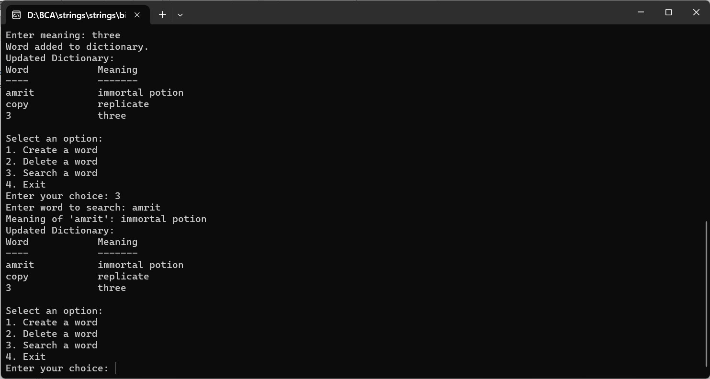

CREATE A DICTIONARY HAVING 10 WORDS AND THEIR MEANING WITH FOLLOWING OPERATIONS. [CREATE, DELETE, SEARCH]
#include
#include
#define MAX_WORDS 10
#define MAX_WORD_LENGTH 50
#define MAX_MEANING_LENGTH 100
struct Dictionary {
char words[MAX_WORDS][MAX_WORD_LENGTH];
char meanings[MAX_WORDS][MAX_MEANING_LENGTH];
int count;
};
void initializeDictionary(struct Dictionary *dict) {
dict->count = 0;
}
void displayDictionary(struct Dictionary *dict) {
printf("Word\t\tMeaning\n");
printf("----\t\t-------\n");
for (int i = 0; i < dict->count; i++) {
printf("%s\t\t%s\n", dict->words[i], dict->meanings[i]);
}
}
int searchWord(struct Dictionary *dict, const char *word) {
for (int i = 0; i < dict->count; i++) {
if (strcmp(dict->words[i], word) == 0) {
return i;
}
}
return -1;
}
void createWord(struct Dictionary *dict, const char *word, const char *meaning) {
if (dict->count < MAX_WORDS) {
strcpy(dict->words[dict->count], word);
strcpy(dict->meanings[dict->count], meaning);
dict->count++;
printf("Word added to dictionary.\n");
} else {
printf("Dictionary is full. Cannot add more words.\n");
}
}
void deleteWord(struct Dictionary *dict, const char *word) {
int index = searchWord(dict, word);
if (index != -1) {
for (int i = index; i < dict->count - 1; i++) {
strcpy(dict->words[i], dict->words[i + 1]);
strcpy(dict->meanings[i], dict->meanings[i + 1]);
}
dict->count--;
printf("Word deleted from dictionary.\n");
} else {
printf("Word not found in the dictionary.\n");
}
}
int main() {
struct Dictionary myDictionary;
initializeDictionary(&myDictionary);
int choice;
char word[MAX_WORD_LENGTH];
char meaning[MAX_MEANING_LENGTH];
do {
printf("\nSelect an option:\n");
printf("1. Create a word\n");
printf("2. Delete a word\n");
printf("3. Search a word\n");
printf("4. Exit\n");
printf("Enter your choice: ");
scanf("%d", &choice);
getchar(); // Consume the newline character
switch (choice) {
case 1:
printf("Enter word to add: ");
fgets(word, sizeof(word), stdin);
word[strcspn(word, "\n")] = '\0';
printf("Enter meaning: ");
fgets(meaning, sizeof(meaning), stdin);
meaning[strcspn(meaning, "\n")] = '\0';
createWord(&myDictionary, word, meaning);
break;
case 2:
printf("Enter word to delete: ");
fgets(word, sizeof(word), stdin);
word[strcspn(word, "\n")] = '\0';
deleteWord(&myDictionary, word);
break;
case 3:
printf("Enter word to search: ");
fgets(word, sizeof(word), stdin);
word[strcspn(word, "\n")] = '\0';
int index = searchWord(&myDictionary, word);
if (index != -1) {
printf("Meaning of '%s': %s\n", word, myDictionary.meanings[index]);
} else {
printf("Word not found in the dictionary.\n");
}
break;
case 4:
printf("Exiting the program...\n");
break;
default:
printf("Invalid choice.\n");
}
if (choice != 4) {
printf("Updated Dictionary:\n");
displayDictionary(&myDictionary);
}
} while (choice != 4);
return 0;
}
